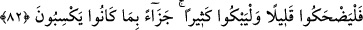

koru eline alınca avucunu yaktı. “Bu nedir, ey Cebrâîl? diye sordu. Cebrâîl (a.s.):
“Cehennemden bir kor. Onu yetmiş defa yıkadım sonra da sana getirdim. Üzerine odun
at ve ekmek pişirip ye!” dedi. Âdem (a.s.) ağladı ve: “Bunun sıcaklığına çocuklarım
nasıl dayanır?!” dedi. Cebrâîl (a.s.): “Allah’a itaatkar olan çocuklarına onun bir zararı
dokunmaz” dedi. Nitekim bir hadiste şöyle buyurulmuştur: “Cehennem, mümine: Çabuk
geç ey mümin, nûrun alevimi söndürdü!” der.”[220]
Allah ile beraber olan kimseyi hiçbir şey yakamaz. Miraç gecesinde Peygamber
Efendimiz (a.s.)’ın haline baksana; esir tabakasını (atmosferin dokuzuncu tabakası) bir
kılı dahi yanmadan nasıl geçti? Yine ateş, nasıl İbrâhim (a.s.) için serinlik ve esenlik
oldu?!
82. Artık kazandıkları işlere karşılık az gülsünler, çok ağlasınlar!
“Artık kazandıkları işlere” yaptıkları türlü günahlara “karşılık” dünyada “az
gülsünler,” Bu söz, (insan) ömrünün müddetine işaret etmektedir. Dünyanın ömrü az
olduğuna göre dünyada yaşayanın ömrü nasıl olur?! Elbette onun ömrü azın azı olur.
Âhirette ateşte “çok ağlasınlar!” Yani dünyada kazandıkları çeşitli günahların karşılığı
olarak âhirette çok ağlasınlar, demektir.
“Ağlasınlar” ve “gülsünler” ifâdeleri emir kipiyle gelmiştir, fakat haber mânâsınadır.
Az gülerler, çok ağlarlar, demektir. Haber verilenlerin gerçekleşmesi kesin olduğu için
ifade emir kipiyle gelmiştir. Çünkü emrine daima itaat edilen bir âmirin verdiği emir,
emredilen tarafından neredeyse hiç ihmal edilmez.
Rivâyet edildiğine göre münâfıklar cehennem ateşinde dünyanın ömrü kadar ağlarlar.
Gözyaşları hiç dinmez. Uyku yüzü görmezler. Bir hadiste şöyle buyurulmuştur: “Allah
cehennemliklere bir ağlama gönderip musallat eder. Onlar da gözyaşları
kuruyuncaya kadar ağlarlar. Sonra kan ağlamaya başlarlar. Öyle ki yüzlerinde (akan
göz yaşları sebebiyle) çukurlar oluşur.”[221]
Âyette geçen “gülme”nin sevinçten, “ağlama”nın da gamdan, “az”lığın yokluktan,
“çok”luğun da süreklilikten kinâye olması da mümkündür. Yâni onlar yarın gamlı,
ferahsız ve dâimâ sevinçsiz olurlar. Bu tefsîre göre gülme ve ağlama vakti âhirettedir.
Gülme ve ağlama vaktinin dünyada olması da mümkündür. Yani, Allah Rasûlü’ne karşı
gösterdikleri kibir ve kötü hal sebebiyle münâfıkların gülmelerinin az, ağlamalarının da
bu yüzden çok olması gerekir. Nitekim Peygamber Efendimiz (a.s.) ümmetine şöyle
demiştir: “Benim bildiklerimi bilseniz elbette çok ağlar, az gülerdiniz.”[222]
İbn Ömer (r.a.) der ki: Rasûlullah (s.a.) bir gün (çarşıya) çıkmıştı. Birbirleri ile